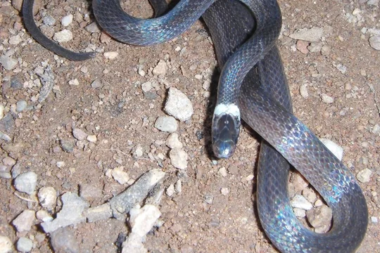

Micrurus
The genus Micrurus (family Elapidae) has 83 species in SnakeList (all venomous), recorded in 21 countries.
- 83species
- 83venomous
- 21countries
About the genus
A genus of the family Elapidae (cobras, mambas, coral snakes, sea snakes and relatives).
Species
Showing 83 species
 Allen's Coral SnakeMicrurus alleni
Allen's Coral SnakeMicrurus alleni Amazon Coral SnakeMicrurus spixii
Amazon Coral SnakeMicrurus spixii Andean Blackback Coral SnakeMicrurus narduccii
Andean Blackback Coral SnakeMicrurus narduccii Annellated Coral SnakeMicrurus annellatus
Annellated Coral SnakeMicrurus annellatus Aquatic Coral SnakeMicrurus surinamensis
Aquatic Coral SnakeMicrurus surinamensis Argentinian Coral SnakeMicrurus pyrrhocryptus
Argentinian Coral SnakeMicrurus pyrrhocryptus Balsas Coral SnakeMicrurus laticollaris
Balsas Coral SnakeMicrurus laticollaris Black-headed Coral SnakeMicrurus averyi
Black-headed Coral SnakeMicrurus averyi- No photo yetBogert's Coral SnakeMicrurus bogerti
 Boicora Coral SnakeMicrurus boicora
Boicora Coral SnakeMicrurus boicora Bolivian Coral Snake (obscurus)Micrurus obscurus
Bolivian Coral Snake (obscurus)Micrurus obscurus Bolivian Coral Snake (serranus)Micrurus serranus
Bolivian Coral Snake (serranus)Micrurus serranus Brazilian Coral SnakeMicrurus decoratus
Brazilian Coral SnakeMicrurus decoratus Brazilian coralsnakeMicrurus brasiliensis
Brazilian coralsnakeMicrurus brasiliensis Broad-ringed Coral SnakeMicrurus latifasciatus
Broad-ringed Coral SnakeMicrurus latifasciatus Brown's Coral SnakeMicrurus browni
Brown's Coral SnakeMicrurus browni Caatinga Coral SnakeMicrurus ibiboboca
Caatinga Coral SnakeMicrurus ibiboboca Camila's CoralsnakeMicrurus camilae
Camila's CoralsnakeMicrurus camilae Capuchin coral snakeMicrurus dumerilii
Capuchin coral snakeMicrurus dumerilii Carib Coral SnakeMicrurus psyches
Carib Coral SnakeMicrurus psyches- No photo yetCatamayo Coral SnakeMicrurus catamayensis
 Cauca Coral SnakeMicrurus multiscutatus
Cauca Coral SnakeMicrurus multiscutatus Central American Coral SnakeMicrurus nigrocinctus
Central American Coral SnakeMicrurus nigrocinctus- No photo yetChocó Coral SnakeMicrurus spurrelli
 Clark's Coral SnakeMicrurus clarki
Clark's Coral SnakeMicrurus clarki- No photo yetCloud Forest Coral SnakeMicrurus nebularis
 Costa Rican Coral SnakeMicrurus mosquitensis
Costa Rican Coral SnakeMicrurus mosquitensis Desert Coral SnakeMicrurus tschudii
Desert Coral SnakeMicrurus tschudii Diana's Coral SnakeMicrurus diana
Diana's Coral SnakeMicrurus diana Eastern Coral SnakeMicrurus fulvius
Eastern Coral SnakeMicrurus fulvius Ecuador Coral SnakeMicrurus bocourti
Ecuador Coral SnakeMicrurus bocourti Elegant Coral SnakeMicrurus elegans
Elegant Coral SnakeMicrurus elegans Guyana Blackback Coral SnakeMicrurus collaris
Guyana Blackback Coral SnakeMicrurus collaris Hemprich's Coral SnakeMicrurus hemprichii
Hemprich's Coral SnakeMicrurus hemprichii Langsdorff's Coral SnakeMicrurus langsdorffi
Langsdorff's Coral SnakeMicrurus langsdorffi Many-banded Coral SnakeMicrurus multifasciatus
Many-banded Coral SnakeMicrurus multifasciatus Mayan Coral SnakeMicrurus hippocrepis
Mayan Coral SnakeMicrurus hippocrepis Medem's CoralsnakeMicrurus medemi
Medem's CoralsnakeMicrurus medemi Merida Coral SnakeMicrurus meridensis
Merida Coral SnakeMicrurus meridensis Mertens' Coral SnakeMicrurus mertensi
Mertens' Coral SnakeMicrurus mertensi Mesopotamian coral snakeMicrurus baliocoryphus
Mesopotamian coral snakeMicrurus baliocoryphus Natterer's Coral SnakeMicrurus nattereri
Natterer's Coral SnakeMicrurus nattereri Nayarit Coral SnakeMicrurus proximans
Nayarit Coral SnakeMicrurus proximans- No photo yetNeblina coralsnakeMicrurus remotus
 Oaxacan Coral SnakeMicrurus ephippifer
Oaxacan Coral SnakeMicrurus ephippifer Ornate CoralsnakeMicrurus ornatissimus
Ornate CoralsnakeMicrurus ornatissimus- No photo yetPacaraima coral snakeMicrurus pacaraimae
 Painted Coral SnakeMicrurus corallinus
Painted Coral SnakeMicrurus corallinus Panamenian Coral SnakeMicrurus stewarti
Panamenian Coral SnakeMicrurus stewarti Pantanal Coral SnakeMicrurus tricolor
Pantanal Coral SnakeMicrurus tricolor Pará Coral SnakeMicrurus paraensis
Pará Coral SnakeMicrurus paraensis Peru Coral SnakeMicrurus peruvianus
Peru Coral SnakeMicrurus peruvianus- No photo yetPeters' Coral SnakeMicrurus petersi
 Pigmy Black-backed CoralsnakeMicrurus scutiventris
Pigmy Black-backed CoralsnakeMicrurus scutiventris Potyguara Coral SnakeMicrurus potyguara
Potyguara Coral SnakeMicrurus potyguara Putumayo Coral SnakeMicrurus putumayensis
Putumayo Coral SnakeMicrurus putumayensis Pygmy Coral SnakeMicrurus dissoleucus
Pygmy Coral SnakeMicrurus dissoleucus Redtail Coral SnakeMicrurus mipartitus
Redtail Coral SnakeMicrurus mipartitus Regal Coral SnakeMicrurus ancoralis
Regal Coral SnakeMicrurus ancoralis- No photo yetRinged Slender CoralsnakeMicrurus renjifoi
 Roatan Coral SnakeMicrurus ruatanus
Roatan Coral SnakeMicrurus ruatanus- No photo yetSaddled Coral SnakeMicrurus bernadi
 Santander Coral SnakeMicrurus sangilensis
Santander Coral SnakeMicrurus sangilensis Silvia coralsnakeMicrurus silviae
Silvia coralsnakeMicrurus silviae Slender Coral SnakeMicrurus filiformis
Slender Coral SnakeMicrurus filiformis South American Coral SnakeMicrurus lemniscatus
South American Coral SnakeMicrurus lemniscatus Southern Coral SnakeMicrurus frontalis
Southern Coral SnakeMicrurus frontalis- No photo yetSpeckled Coral Snake (margaritiferus)Micrurus margaritiferus
 Steindachner's Coral SnakeMicrurus steindachneri
Steindachner's Coral SnakeMicrurus steindachneri- No photo yetStuart's Coral SnakeMicrurus stuarti
- No photo yetTambito's Coral SnakeMicrurus oligoanellatus
 Texas Coral SnakeMicrurus tener
Texas Coral SnakeMicrurus tener Tikuna coralsnakeMicrurus tikuna
Tikuna coralsnakeMicrurus tikuna Trinidad coralsnakeMicrurus diutius
Trinidad coralsnakeMicrurus diutius Trinidad Northern Coral SnakeMicrurus circinalis
Trinidad Northern Coral SnakeMicrurus circinalis Tuxtlan Coral SnakeMicrurus limbatus
Tuxtlan Coral SnakeMicrurus limbatus Uruguayan coralsnakeMicrurus altirostris
Uruguayan coralsnakeMicrurus altirostris Variable Coral SnakeMicrurus diastema
Variable Coral SnakeMicrurus diastema Venezuela Coral SnakeMicrurus isozonus
Venezuela Coral SnakeMicrurus isozonus West Mexican Coral SnakeMicrurus distans
West Mexican Coral SnakeMicrurus distans White-banded Coral SnakeMicrurus albicinctus
White-banded Coral SnakeMicrurus albicinctus- Known from fossilsMicrurus gallicus

Micrurus pachecogili
No snakes in Micrurus match.